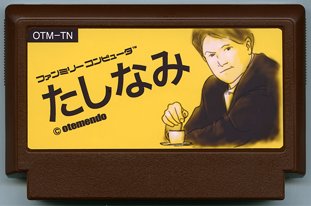

たしなみ
坂上聡之／METEOR
Official Site
地元で長年愛されている喫茶店マスターとの会話が楽しめるソフトです。画面上のキーボードを利用した、直接入力方式で「コノ コーヒー ハ オイシイデス」「サイキン ハ ドウ デスカ？」などの問いかけに、マスターが優しく語りかけてくれます。あなたの会話や態度次第で、酸いも甘いも知り尽くしたマスターの珠玉の小話がきけるかも？ グチばかりボヤいていると苦い珈琲を出されるから注意が必要だ。